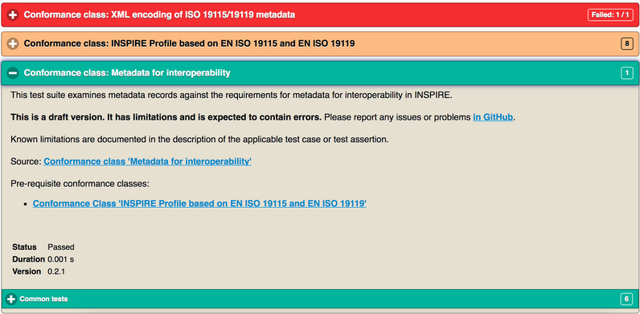

ETF Quickstart¶
Bemerkung
Das Projekt ist nur Teil der OSGeoLive Virtuelle Maschine Disk (VMDK)
ETF ist ein Open-Source-Testframework zur Validierung von Geodaten, Metadaten und Webservices in Geodateninfrastrukturen (SDIs). Das Design von ETFs wird von drei Zielen bestimmt: Benutzerfreundlichkeit, Standardkonformität und der Möglichkeit, alle Ressourcen einer SDI testen zu können.
Diese Kurzanleitung beschreibt:
Navigation durch die Webanwendung
Start eines Tests
Monitoring eines Testlaufs
Beobachten und Verwalten von Testberichten
Inhalt
Einleitung¶
From the OSGeoLive Start menu, select . The application will take a few moments to start up and will open a web page at http://localhost:9090/ETF
In the header, there is a menu with 4 sections, each representing different views and functionalities:

The first one is Start test. In this section all available (i.e. installed) Executable Test Suites are listed. Within this section, an Executable Test Suite can be selected and run against a Test Object.
The second one is Status. This one shows all tests that are currently being executed on the system and allows to open a monitor view for single test runs to check the status of any running test. Moreover, the components currently loaded are shown below the running tests.
The third one is Test reports. In this one the results of any completed test can be checked, analysed in detail or downloaded.
The fourth one is Help. This one is a link to the documentation. Inside it, there are guides on how to use all functionalities of the ETF.
Start test¶
Test Suite Selection¶
Die Startansicht zeigt die verfügbaren ausführbaren Testsuiten.

Additional information about a Test Suite can be accessed by clicking on the + button.

Diese Information:
Enthält eine Beschreibung der Testsammlung.
Kann einen Link zur Abstract Test Suite enthalten, von der die Executable Test Suite abgeleitet wurde (Quelle).
Kann die Test Suite-Abhängigkeiten enthalten, die in einem Testlauf automatisch mit der Testsuite ausgeführt werden (erforderliche Konformitätsklassen).
Kann die Namen der zugeordneten Tags enthalten, die zum Gruppieren der Test-Suite in der Ansicht verwendet werden.
Includes the name of applicable Test Object Types (explained in the next section).
Enthält allgemeine Informationen wie Version, Autor und letzten Bearbeiter, Erstellungs- und Änderungsdaten.
To start a Test Run, a Test Suite must be selected with a click on the use flip switch on the right-hand side.

A Start button appears once at least one Test Suite is selected.
Eine Test-Suite gilt nur für bestimmte Testobjekttypen, die in der Beschreibung aufgeführt sind. Es können auch mehrere Tests-Suites für einen Testlauf ausgewählt werden, sie müssen jedoch auf denselben Testobjekttyp anwendbar sein. Sobald eine Test-Suite ausgewählt wurde, wird der Schalter aller anderen Testsammlungen mit unterschiedlichen Testobjekttypen deaktiviert.

Eine Test-Suite kann von anderen Test-Suites abhängen. Die Abhängigkeiten sind auch in der Beschreibung der Test-Suites aufgeführt. Diese Abhängigkeiten werden während des Testlaufs automatisch ausgeführt.
A click on the Start button will open a new view that asks the user about the target resource to be tested.
Konfiguration des Testlaufs¶

The Label field is mandatory and automatically preset with the current time and names of the selected Test Suites. The Label will be shown in the Test reports section and can be changed in order to help find the report again after a test run.
Der Stil der Ansicht kann von den ausgewählten Test-Suite abhängen.
Dateibasierte Tests¶
Die folgenden Elemente werden angezeigt, wenn Test-Suites ausgewählt wurden, die eine oder mehrere Test-Dateien testen.
If File upload is selected as Data source, one or multiple local files can be selected and uploaded to the ETF. The ETF only accepts files with XML and GML file extensions as well as ZIP files containing these two file types.
Bemerkung
Andere Dateien, wie Schemadefinitionsdateien, können nicht verwendet werden und werden vom ETF stillschweigend ignoriert!

Die maximale Größe der hochladbaren Datei wird angezeigt, wenn die Maus über das Fragezeichen bewegt wird.
If the data to be tested are available on the web, they can be tested by providing one single URL. After Remote file (URL) has been selected as Data source, a Remote URL to either one single XML, GML or a ZIP file can be entered.

If the URL requires authentication, username and password can be provided by clicking on Credentials.

Service-Tests¶
Die folgenden Elemente werden angezeigt, wenn Test-Suites ausgewählt wurden, die einen Dienst testen sollen.
The Service URL must be entered beginning with http:// or https://.

If the service requires authentication, username and password can be provided by clicking on Credentials.
Abhängigkeiten und Parameter¶
The Test Suites button shows some basic information about the selected Test Suites and - if applicable - about the direct dependencies.

If the Test accepts parameters, they are shown in the Test Suite Parameters section. Optional parameters can be displayed by clicking on the Optional Parameters button. A description of the parameters is displayed when the mouse is moved over the question mark.
Bemerkung
In den meisten Fällen können die voreingestellten Standardwerte verwendet werden.

Finally the test can be started by clicking on the Start button. The view then changes automatically to the Monitor Test Run view.
Überwachen von Testläufen¶
After a Test Run has been started the Monitor Test Run view is shown.

Der blaue Balken zeigt den Fortschritt an.

The console area shows information and result messages. The Test Run can be canceled with a click on the Cancel button.
The view can be closed, for instance with the X Button in the upper left corner. Also when the browser is closed, the Test Run execution continues on the server.
To reopen the Monitor Test Run view after it has been closed, select in the menu bar the Status section. The Status section shows all running tests. A click on the Test Run opens the Monitor Test Run view of that Test Run.

When a Test Run finishes and the Monitor Test Run view is opened, the Test Report is displayed automatically.
Testberichte¶
The Test Reports section shows all reports that have been generated from Test Runs.

By clicking on the + button information for a Test Run, the start time, the test result status, the name of the Test Object and the used Test Suites are shown.
A Test Report can be opened again by clicking on the Open report button or can be downloaded as HTML file by clicking on the Download report button.
The log file of the test run can be inspected with the Open log button. By clicking on the Delete report button, the report will be deleted permanently.
Prüfen von Testberichten¶
The top of a Test Report shows general information including the overall test result status, the start time, the duration and a table, which summarizes the status of all tests on several levels.

The Test Reports are interactive. The Show switch can be used to filter Only failed or Only manual tests. The option All deactivates the filter.
The Level of detail switch is used to show more or less information in the reports.

Die Testergebnisse werden hierarchisch in einem Bericht zusammengefasst. Auf der obersten Ebene befinden sich die Test-Suites.
By clicking on one Test Suite, a description and all lower level tests in that Test Suite are shown. Errors in a Test Suite can be immediately recognized by the red color. The number of failed tests is shown in the top-right corner.
Die grüne Farbe zeigt einen bestandenen Test an. Bestandene Tests, die zusätzliche manuelle Testschritte erfordern, die nicht automatisiert werden konnten, sind orange eingefärbt. Die orange Farbe kann auch auf einen Test hinweisen, der übersprungen wurde, da er von einem anderen Test abhängt, der fehlgeschlagen ist. Den genauen Status finden Sie unter der Beschreibung.
The number of levels depends on the tested Test Object. If service tests have been executed, the hierarchy is as follows:
Ausführbare Test-Suites
Testmodule (bündelt Testfälle)
Testfälle (bündelt Testschritte)
Testschritte (Interaktionen mit dem Dienst, bündelt Test-Assertionen)
Test-Assertions (atomare Tests)
In einem dateibasierten Test sind Testmodule und Testschritte nicht vorhanden und werden im Bericht nicht angezeigt.
Each test lists the requirements and provides a description on how they are tested. The test may include a link to an Abstract Test Suite, from which the test has been derived (Source).

Assertions stand for atomic test queries on the lowest level. Failed, red colored assertions display error messages in the Messages section.

Helpful information may also be found on the next higher level, like for instance the response from a service on the Test Step level (note the Open saved response link in the report).

Resources¶
Anhand der oben genannten Anweisungen finden Sie im Folgenden einen vordefinierte Ressourcen, die Sie im ETF testen können:
GML data sets: some predefined data sets can be downloaded from here.
WMS-Dienste: Eine Liste der Dienste finden Sie hier.
WFS-Services: Eine Liste der Services finden Sie hier.
Bemerkung
Some of the GML data sets provided above do not pass all the tests, so you can try to fix them (based on the errors reported in the test report) before validating them again until all tests succeed.
Was kommt als Nächstes?¶
This was just a very brief overview of the ETF. There is more information in the demo installation and on the ETF GitHub space.
Bitte beachten Sie auch: